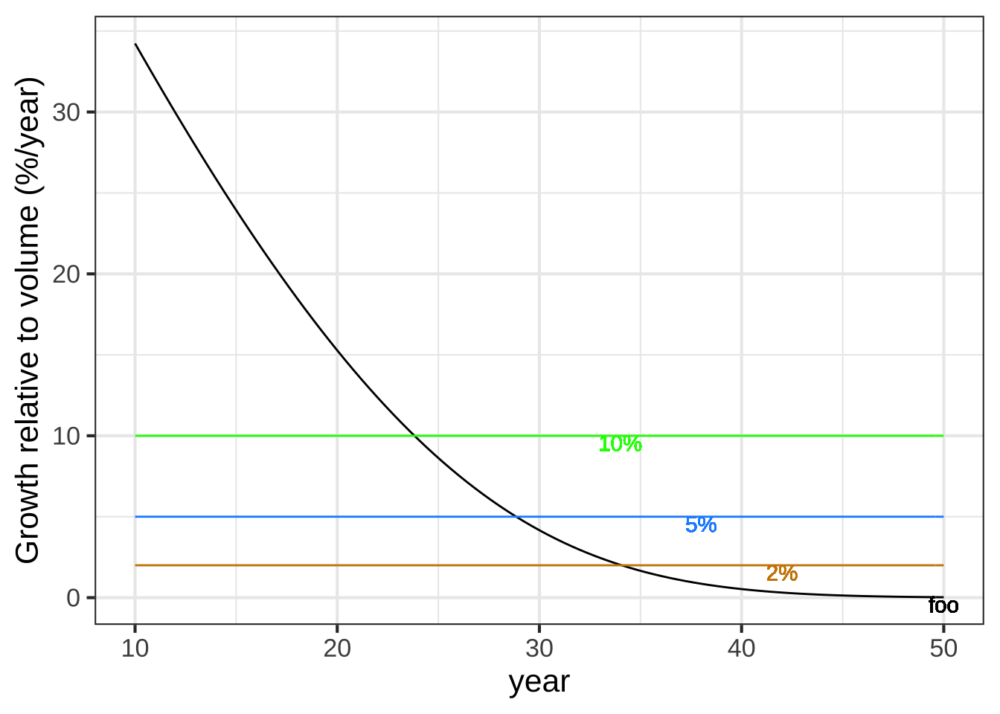

Chapter 14 Change relationships
The questions that started it all had to do with motion. There were words to describe speed: fast and slow. There were words to describe force: strong and weak, heavy and light. And there were words to describe location: far and near, long and short. But what were the relationships among these things? And how did time fit in, an intangible quantity that had aspects of location (long and short) and of speed (quick and slow)?
Galileo (1564-1642) started the ball rolling. As the son of a musician and music theorist, he had a sense of musical time, a steady beat of intervals. As a student of medicine in Pisa, he noted that swinging pendulums kept reliable time, regardless of the amplitude of their swing. After accidentally attending a lecture on geometry, he turned to mathematics and natural philosophy. Inventing the telescope, his observations put him on a collision course with the accepted classical truth about the nature of the planets. Seeking to understand gravity, he built an apparatus that enabled him to measure accurately the position in time of a ball rolling down a straight ramp. The belled gates he set up to mark the ball’s passage were spaced arithmetically in musical time: 1, 2, 3, 4, …. But the distance between the gates was geometric: 1, 4, 9, 16, …. Thus he established a mathematical relationship between increments in time and increments in position. Time advanced as 1, 1, 1, 1, … and position as 1, 3, 5, 7, …. He observed that the second increments of position, the increments of the increments 1, 3, 5, 7, …, were themselves evenly spaced: 2, 2, 2, ….
Putting these observations in tabular form, and adding columns for the
- first increment \(y(t) \equiv x(t+1) - x(t)\) and the
- second increment \(y(t+1) - y(t)\)
| \(t\) | \(x(t)\) | first increment | second increment |
|---|---|---|---|
| 0 | 0 | 1 | 2 |
| 1 | 1 | 3 | 2 |
| 2 | 4 | 5 | 2 |
| 3 | 9 | 7 | |
| 4 | 16 |
Galileo had neither the mathematics nor the equipment to measure motion continuously in time. So what might be obvious to us now, that position is a function of time \(x(t)\), would have had little practical significance to him. But we discover in his first increments of \(x\) something very much like our slope function.
\[{\cal D}_t\, x(t) \equiv \frac{x(t + 1) - x(t)}{1}\] From his data, he observed that \({\cal D}_t\, x(t)\) increases linearly in \(t\): \[{\cal D}_t x(t) = 2 t + 1\]
Calculating the second increments of \(x\) is done by the “slope function of the slope function,” which we can call \({\cal D}_{tt}\): \[{\cal D}_{tt} x \equiv {\cal D}_t \left[{\cal D}_t x(t)\right] = 2(t+1) + 1 - (2 t + 1) = 2\]
Newton considered the problem for continuous time rather than Galileo’s discrete time. He reframed the slope function from the big increments of the slope operator \({\cal D}_t\) to imagined vanishingly small increments of a operator that we shall denote \(\partial_t\) and call differentiation.
The kind of question for which Newton wanted to be able to calculate the answer was, “How to find the function \(x(t)\) whose second increment, \(\partial_{tt} x(t) = 2\)?” His approach, which he called the “method of fluxions,” became so important that its name became, simply, “Calculus.”
14.1 Slopes and increments.
The mathematical tools of Newton’s day are the basis of today’s conventional high-school curriculum.14 We have today completely different tools based on the ability to do arithmetic and function evaluation very quickly with computers. We’re going to use these new tools to explore the problem of relating the slope-function operator \({\cal D}_t\) to the differential operator \(\partial_t\). We have the great advantage of being able to look backwards and so can focus on the functions that experience reveals have been the most widely useful: the basic modeling functions.
Our goal in this section is to discover what are the slope functions of our basic modeling functions. Recall that the slope-function operator can be written as a ratio of rise-over-run:
\[{\cal D}_t x(t) \equiv \frac{x(t+h) - x(t)}{h}\] where \(h\) is the length of the “run.” We’ll start with two of the basic modeling functions that have considerable “personality”: the sinusoid (sin()) and the sigmoid (pnorm()).


Figure 14.1: The naked sinusoid and sigmoidal functions. A vertical blue line has been added to mark the input \(t=0\)
We’ll use the computer to construct the slope functions for the sinusoid and sigmoid, which we’ll call Dsin() and Dsigma() respectively.
Dsin <- makeFun(( sin(t+h) - sin(t))/h ~ t, h=0.1)
Dsigma <- makeFun((pnorm(t+h) - pnorm(t))/h ~ t, h=0.1)In the tilde expression handed to makeFun(), we’ve identified t as the name of the input and given a “small” default value to the h parameter. But R recognizes that both Dsin() and Dsigma() are functions of two variables, t and h, as you can see in the parenthesized argument list for the functions.
Dsin## function (t, h = 0.1)
## (sin(t + h) - sin(t))/hDsigma## function (t, h = 0.1)
## (pnorm(t + h) - pnorm(t))/hThis is a nuisance, since when using the slope functions we will need always to think about h, a number that we’d like to describe simply as “small,” but for which we always need to provide a numerical value. Let’s look at Dsin() and Dsigma() for a range of values of h, as in Figure 14.2.


Figure 14.2: The slope functions of the sinusoid and sigmoid. Each curve shows the slope function for a particular numerical choice of h. Both panels show \(h=2, 1, 0.5, 0.1, 0.01, 0.001, 0.0001, 0.00001, 0.000001\).
Some observations from this numerical experiment:
As \(h\) gets very small, the slope function doesn’t depend on the exact value of \(h\).
This will provide a way for us, eventually, to discard \(h\) so that the slope function will not need an \(h\) argument.
For small \(h\), we have \({\cal D}_t \sin(t) = \sin(t + \pi/2) = \cos(t)\). That is, taking the slope function of a sinusoid gives another sinusoid, shifted left by \(\pi/2\) from the original. Or, in plain words, the cosine is the slope function of the sine.
For small \(h\), we have \({\cal D}_t \text{pnorm}(t) = \text{dnorm(t)}\). That is, the hump function is the slope function of the sigmoid function.
You can confirm these last two statements by comparison with the original functions, especially the alignment of the peaks of the slope functions with respect to the peak of the sinusoid and the half-way point of the sigmoid.
Now consider the slope functions of the logarithm and exponential functions.


Figure 14.3: The slope functions of the logarithm and exponential.
These numerical experiments with the logarithm and exponential functions are more evidence that, as \(h\) gets small, the slope function doesn’t depend on \(x\). And, we find that:
- For small \(h\), the slope function of the logarithm is a power-law function: \({\cal D}_t \ln(t) = \frac{1}{t}\).
- For small \(h\), the slope function of the exponential is the exponential itself: \({\cal D}_t e^x = e^x\).
You can confirm these by evaluating the slope function of the exponential at \(t=0\) and \(t=1\), and the slope function of the logarithm at \(t= 2, 1, 1/2, 1/4, 1/8.\)
Such numerical experiments on the other naked modeling functions reveal a pattern: the slope function of the naked modeling functions tend to be similar to other naked modeling functions.
| name | \(f(t)\) | \({\cal D}_t f(t)\) (for small \(h\)) | name of \({\cal D_t}f(t)\) |
|---|---|---|---|
| constant fun | \(f(t) = 1\) | \({\cal D}_t f(t) = 0\) | zero function |
| proportional | \(f(x) = x\) | \({\cal D}_t f(t) = 1\) | constant |
| exponential | \(e^t\) | \(e^t\) | exponential |
| logarithm | \(\ln(t)\) | \(1/t\) | reciprocal (power-law \(t^{-1}\)) |
| sinusoid | \(\sin(t)\) | \(\sin(x + \pi/2) = \cos(t)\) | shifted sinusoid |
| power-law | \(t^p\) with \(p\neq 0\) | \(p\,t^{p-1}\) | power-law |
| sigmoid | \(\text{pnorm}(t)\) | $(t) | hump |
With this list of experimentally determined slope functions (for small \(h\)) we’re ready to start using slope functions without having to use left-shift combinations like \(f(t+h) - f(t)\).
For each exercise, you are given a series of intervals that get smaller and smaller. Your job is to calculate the average rate of change of the function \(f(x) \equiv x^2\) for each of the intervals. As the width of the intervals approach zero, our average rates of change become better approximations of the instantaneous rates of change. You should use the results you calculate to make an informed estimate of the instantaneous rate of change.
interval <- c(__start__ , __end__ )
f <- makeFun(x^2 ~ x)
diff(f(interval)) / diff(interval)A. Use these three intervals to estimate the instantaneous rate of change \(\partial_x f(x=3)\) - [3, 3.1] - [3, 3.01] - [3, 3.001]
B. Use these three intervals to estimate the instantaneous rate of change \(\partial_x f(x=5)\) - [4.9, 5] - [4.99, 5] - [4.999, 5]
C. Use these three intervals to estimate the instantaneous rate of change \(\partial_x f(x=-2)\) - [-2, -1.9] - [-2, -1.99] - [-2, -1.999]
14.2 Slopes and motion
Having worked out a theory of slope functions, Newton was ready to express the laws of motion in continuous time. He did this by expressing position as \(x(t)\), and then familiar concepts velocity and force in terms of slope functions of position and the “quantity of matter,” which we call “mass.”
- Velocity is the slope function of position: \(v(t) \equiv {\cal D}_t x(t)\).
- Net force is the slope function of velocity times mass: \(F(t) \equiv m {\cal D}_t v(t)\)
To take mass out of the formulation, we give a name specifically to the slope function of velocity; we call it acceleration.
- Acceleration is the slope function of velocity: \(a(t) \equiv {\cal D}_t v(t)\).
With acceleration as a concept, we can define net force as mass times acceleration.
We used net force as the quantity we related to mass and the slope function of velocity. There are different sources of forces which add up and can cancel out. Famously, Newton formulated the law of universal gravitation which ascribed the force between masses as proportional to the product of the two masses and inversely proportional to the square of the distance between them. But a mass on a table has no net force on it, since the table pushes back (push = force) on the mass to cancel out the force due to gravity. “Net force” takes such cancellation into account.
14.3 Differentiation
Differentiation is a process of transforming a function to produce another function. There are several traditional notations for differentiation of a function named \(f()\), for instance:
- Leibnitz: \(\frac{df}{dx}\)
- Partial: \(\frac{\partial f}{\partial x}\)
- One-line: \(\partial_x f\)
- Newton: \(\dot{f}\)
- Prime: \(f'\)
In this book, we will mainly use the one-line notation, \(\partial_x f\), but it means exactly the same as the Leibnitz and Partial notations, which are much more widely used in textbooks.
If you’ve studied calculus before, you have likely seen the \(f'\) notation. This is admirably concise but is only viable in a narrow circumstance: functions that take a single input. What \(f'\) leaves out is a means to specify a crucial aspect of differentiation, the with-respect-to variable. The general situation for differentiation involves functions of one or more variables, for example, \(g(x, y, z)\). For such functions, you need to specify which is the with-respect-to variable. For instance, we can differentiate \(g()\) three different ways, each way incrementing one or another of the three inputs:
\[\partial_z g(x, y, z) \equiv \frac{g(x, y, z+h) - g(x, y, z)}{h}\\ \ \\ \partial_x g(x, y, z) \equiv \frac{g(x+h, y, z) - g(x, y, z)}{h}\\ \ \\ \partial_y g(x, y, z) \equiv \frac{g(x, y+h, z) - g(x, y, z)}{h}\]
At this point in your studies, you haven’t seen why you might choose to differentiate a function with respect to one variable or another. That will come in time. But we want to set you up with notation that won’t narrow your options.
Both the Leibnitz and Partial notations are explicit in identifying the function and the with-respect-to-variable. For example, using the Partial differentiation notation, the three ways of differentiating our example function \(g(x, y, z)\) are labeled :
\[\frac{\partial f}{\partial x},\ \ \ \frac{\partial f}{\partial y},\ \ \text{and}\ \ \frac{\partial f}{\partial z}\]
Our R/mosaic computer differentiation is longer but explicit:
D(g(x, y, z) ~ x)
D(g(x, y, z) ~ y)
D(g(x, y, z) ~ z)Notice that the R/mosaic operator is named D() and that it is a function. It follows the same pattern as makeFun() or slice_plot() or contour_plot(): the first argument is a tilde expression, for instance g(x, y, z) ~ x, which identifies the mathematical function to work with (g()) and the name of the with-respect-to input to that function. The R/mosaic notation makes it clear that differentiation is an operation on a function. The D() operator takes a function as input and produces as output another function. We’ve seen similar behavior with, say, slice_plot(), which takes a function as input and produces graphics as output. Both D() and slice_plot() need to know the identity of the with-respect-to variable as well as the function to work with. What’s why both pieces of input are packaged into a tilde expression.
We’re calling D() an operator rather than a function. The reason is purely for communication with other people. There are so many “functions” in a calculus course that we thought it would be helpful to distinguish between the kinds of functions that take quantities as input and produce a quantity as output, and the functions that take a function as input and produce a function as output. Both sorts are called “functions” in R terminology. But a sentence like, “Differentiation is a function that takes a function as input and produces a function as output,” true though it be, is dizzying.
It is a fact of mathematical and scientific life that a variety of notations are used for differentiation. To some extent, this reflects historical precedence and, to be honest, nationalistic European politics of the 18th century. To make sense of mathematical writing in the many areas in which calculus is used, you have to recognize all of them for what they are. Your skill will be enhanced if you also memorize the names of the different styles. It’s not all that different from the pattern in English of having multiple words for the same sort of object, for instance: car, automobile, junker, ride, wheels, crate, jalopy, limo, motor car, horseless carriage.
In the days when carriages where pulled by horses, the phrase “horseless carriage” made a useful distinction. Today, when horses are rarely seen on the road, it make sense to trim down the notation to its essentials: ~horseless~ car~iage~. Think of \(\partial_x\) as this sort of minification.15
14.4 Dimension of derivatives
Recall that the differencing operator takes as input a function and returns as output another function that takes the same kind of input, but produces a different kind of output.
For instance, suppose the function pressure() takes an altitude as input (in km) and returns a pressure (kPA–air pressure at sea level is about 100 kiloPascal).
The derivative function, let’s call it d_pressure(), also takes an input in km, but produces an output in kPA per km: a rate.
You can see this by examining the differencing operator itself:
\[{\cal D}_x f(x) \equiv \frac{f(x+h) - f(x)}{h}\]
Remember the notation for dimensions. A quantity \(x\) has dimensions denoted as \([x]\). (This is nothing more than saying, “Pronounce ‘\([x]\)’ as ‘the dimensions of \(x\).’”) The input to \(f()\) has dimension \([x]\). The output from \(f()\) has dimension \([f(x)]\).
What is the dimension of \(h\)? (We could write this question more simply, "What is \([h]\)?) Since the operator adds \(x + h\), it must be that \([h] = [x]\).
What is the dimension of \(f(x + h) - f(x)\)? (Again, we could ask this more simply, “What is \([f(x+h) - f(x)]\)?”) Since we’re subtracting two quantities, the two quantities must have the same dimension and the result is also that dimension. So \([f(x+h) - f(x)] = [f(x)]\).
The output of the function \(df(x)\) produced by \(\mbox{Diff}(f)\) therefore has dimension \([f(x)] / [x]\).
A. The given function is \(N(y)\), the population of the Netherlands in year \(y\).
- Dimension of input to \(N(y)\)?
- Dimension of output from \(N(y)\)?
- Dimension of input to \(\partial_y N(y)\)?
- Dimension of output from \(\partial_y N(y)\)?
B. The given function is \(p(u)\), the net profit from a manufactured good as a function of the number of units manufactured.
- Dimension of input to \(p(u)\)?
- Dimension of output from \(p(u)\)?
- Dimension of input to \(\partial_u p(u)\)?
- Dimension of output from \(\partial_u p(u)\)?
C. The given function is \(w(t)\), the amount of water in a leaky bucket at any time after the bucket was filled.
- Dimension of input to \(w(t)\)?
- Dimension of output from \(w(t)\)?
- Dimension of input to \(\partial_t w(t)\)?
- Dimension of output from \(\partial_t w(t)\)?
14.5 Using h
In working with differentiation, we introduced a quantity \(h\) and then ignored it, saying that it doesn’t really matter so long as it is “small.” A reasonable person might wonder what “small” really means, and why we needed to introduce \(h\) in the first place if we were eventually going to ignore it.
One reason is that “small” and “zero,” although related, are different. For example, refering to the slope functions Dsin() and Dsigma() that we created in an early example in this chapter, we see that setting \(h\) to zero does not get us where we need to be:
Dsin(t=1, h=0)## [1] NaNDsigma(t=0, h=0)## [1] NaNIn NaN, you can hear the echo of your fourth-grade teacher reminding you that it is illegal to divide by zero.
Think of \(h\) as the solvent in paint. You don’t want the solvent once the paint is on the wall; wet paint is a nuisance. But getting the paint from the can to the wall absolutely needs the solvent.
We used the solvent \(h\) earlier in the chapter in the numerical experiments that led us to the derivatives of the naked modeling functions, for instance \(\partial_x e^x = e^x\) or \(\partial_x \sin(x) = \cos(x)\). Eventually, we’ll construct an \(h\)-free theory of differentiation, reducing the process to a set of algebraic rules in which \(h\) never appears. With this as our goal, let’s continue using \(h\) for a while to find some additional useful facts about derivatives.
Linear combination is one of the ways in which we make new functions from existing functions. As you recall, linear combination involves scaling a function and adding the scaled functions. We can easily use \(h\) to show what is the result of differentiating a linear combination of functions. We’ll use \(f(x)\) and \(g(x)\) as the names that could stand for any function whatsoever. And we’ll let \(b\) be the name of a scalar. First, let’s figure out what is \(\partial_x\, b f(x)\), Going back to writing \(\partial_x\) in terms of a slope function: \[\partial_x\, b\,f(x) = \frac{b\, f(x + h) - b\,f(x)}{h}\\ \ \\ = b \frac{f(x+h) - f(x)}{h} = b\, \partial_x f(x)\] In other words, if we know the derivative \(\partial_x\, f(x)\), we can easily find the derivative of any scaled version of \(f()\).
Now consider the derivative of the sum of two functions, \(f(x)\) and \(g(x)\): \[\partial_x\, \left[f(x) + g(x)\right] =\\ \ \\ =\frac{\left[f(x + h) + g(x + h)\right] - \left[f(x) + g(x)\right]}{h} = \\ \ \\ = \frac{\left[f(x+h) -f(x)\right] + \left[g(x+h) - g(x)\right]}{h}\\ \ \\ = \frac{\left[f(x+h) -f(x)\right]}{h} + \frac{\left[g(x+h) - g(x)\right]}{h}\\ \ \\ = \partial_x\, f(x) + \partial_x\, g(x)\]
Using these two rules together, we can differentiate any linear combination of functions in terms of the differentiated functions themselves:
\[\partial_x\ \left[\strut a_1 g_1(x) + a_2 g_2(x) + a_3 g_3(x) + \cdots\right] =\ \ \ \ \ \ \ \ \ \ \\ \ \\ \ \ \ \ \ \ \ \ \ a_1 \partial_x\, g_1(x) + a_2 \partial_x\, g_2(x) + a_3 \partial_x\, g_3(x) + \cdots\]
Because of the way that \(\partial_x\) can be “passed through” a linear combination, mathematicians say that differentiation is a linear operator. Consider this new fact about differentiation as a down payment on what will eventually become a complete theory telling us how to differentiate a product of two functions or the composition of two functions.
EXERCISES: Simple drill on this
14.6 Differencing
Our basic tool for showing difference and slope is a remarkably simple operator that takes a function as input. For a function with one input, the operator \({\cal D}()\) is defined as \[{\cal D}(f) \equiv \frac{f(x + 0.1) - f(x)}{0.1}\] Notice that the \({\cal D}()\) operator returns a function. The output is a linear combination of the input function \(f()\) and a shifted version of \(f()\).
For a function with two inputs, there are two versions of \({\cal D}\): \[{\cal D}_x(f) \equiv \frac{f(x+0.1, y) - f(x, y)}{0.1}\]
\[{\cal D}_y(f) \equiv \frac{f(x, y+0.1) - f(x, y)}{0.1}\]
Suppose that \(f(x)\equiv x^2\). What is the function \({\cal D}(f)\)?
\[ {\cal D}(f) \equiv \frac{f(x+0.1) - f(x)}{0.1}\\ = 10\left((x+0.1)^2 - x^2\right)\\ =10 x^2 + 2x + 0.1 - 10x^2\\ = 2 x + 0.1\]
Suppose that \(f(x) \equiv 2 x + y\). Find the function \({\cal D_x(f)}\).
The linear combination will be \[\frac{1}{0.1}\left(\left[2 (x + 0.1) + y\right] - \left[2 x + y\right]\right) =\\ \\ 20 x + 2 + 10y - \left[20 x - 10y\right] = 2\]
f <- makeFun(2 *x * y ~ x + y)
D(f(x, y) ~ x)## function (x, y)
## 2 * (y)14.7 Instantaneous rate of change
- [Deriv-2b] Distinguish the “average rate of change” from the “instantaneous rate of change.”
Imagine a graph of the position of a car along a road as in Figure @ref{fig:stop-and-go2}.
This graph appears in an exercise in Fun-slopes. What did I intend to prompt with this note. Perhaps a link to Fun-slopes.
Over the course of an hour, the car travelled about 25 miles. In other words, the average speed is 25 miles/hour: the slope of the red line segment. Given the traffic, sometimes the car was stopped (time C), sometimes crawling (time D) and sometimes much faster than average (time B).

The car’s speedometer shows the speed at each moment—or instant—of the trip. As you can see in Figure @ref{fig:stop-and-go}, the speed varies and is sometimes less than the average speed, sometimes greater, and occasionally equal to the average speed over the trip. The general term for the kind of quantity presented by the speedometer is the instantaneous rate of change of the position function with respect to the input to that function.
Figure @ref{fig:instant-speed} shows the instantaneous rate of change of position with respect to time.
 The two graphs in Figures @ref{fig:stop-and-go} and @ref{fig:instant-speed} show exactly the same car trip. The presentation of the data in the different graphs makes it easy to see some things and hard to see others. For instance, figuring out when the car is at a stand-still is harder in the position-vs-time graph than in the speed-vs-time graph. This is very much in the spirit of the sand-furrows example at the start of this chapter: it’s much easier to perceive the furrows because the lighting highlights areas sloping toward the sun as bright and areas sloping away from the sun as dark. In Figure @ref{fig:instant-speed} we’re not using light-and-dark for the display. Instead, we’re showing the instantaneous speed using the vertical axis.
The two graphs in Figures @ref{fig:stop-and-go} and @ref{fig:instant-speed} show exactly the same car trip. The presentation of the data in the different graphs makes it easy to see some things and hard to see others. For instance, figuring out when the car is at a stand-still is harder in the position-vs-time graph than in the speed-vs-time graph. This is very much in the spirit of the sand-furrows example at the start of this chapter: it’s much easier to perceive the furrows because the lighting highlights areas sloping toward the sun as bright and areas sloping away from the sun as dark. In Figure @ref{fig:instant-speed} we’re not using light-and-dark for the display. Instead, we’re showing the instantaneous speed using the vertical axis.
Recall that the interval between \(t_B\) and \(t_C\) had an average rate of change of about 39 miles-per-hour. Looking at the instantaneous rate of change tells the story differently: at time \(t_B\) the car was accelerating to about 60 miles-per-hour. Then it gradually slowed, coming to a stop just before time \(t_C\).
Figure @ref{fig:stop-and-go} shows the function \(\mbox{position}(t)\). Figure @ref{fig:instant-speed} shows a different function, \(\mbox{speed}(t)\). Although the two functions are different, they are intimately related: \(\mbox{speed}(t)\) is the instantaneous rate of change of \(\mbox{position}(t)\).
Two central operations in calculus are:
- Given a function \(f(t)\), find the function \(g(t)\) giving the instantaneous rate of change of \(f()\). This process of deriving \(g(t)\) from \(f(t)\) is called differentiation.
- Given a function \(g(t)\), find the \(f(t)\) of which \(g(t)\) is the instantaneous rate of change. This process of finding \(f()\) given \(g()\) is called anti-differentiation.
The context of the situation being modeled determines whether it’s appropriate to look at an average rate of change or an instantaneous rate of change. Figure @ref{fig:instant-tree} shows the instantaneous rate of change in the volume of wood.
 It’s tempting to look to the year where the growth rate is highest as the optimal harvest year. This is a mistake. The volume of wood being harvested is the accumulated growth not the instantaneous growth. Even though the instantaneous growth is higher at year 23 than year 30, it’s still pretty high at year 30 and waiting until then (or later) accumates those years of higher-than-average growth. That’s why the average rate of growth is a better thing to look at to determine optimal harvest time. Still, is it the right thing to look at?
It’s tempting to look to the year where the growth rate is highest as the optimal harvest year. This is a mistake. The volume of wood being harvested is the accumulated growth not the instantaneous growth. Even though the instantaneous growth is higher at year 23 than year 30, it’s still pretty high at year 30 and waiting until then (or later) accumates those years of higher-than-average growth. That’s why the average rate of growth is a better thing to look at to determine optimal harvest time. Still, is it the right thing to look at?
Between year 30 and 32, there is hardly any change in the value of the average-rate-of-change function. It’s increasing a little, but is it really worthwhile to wait? One argument is that at year 29 you already have a valuable resource: wood that could be money in the bank. If the money were in the bank, you could invest it and earn more money and at the same time get a new seedling in the ground to start its growth. You’re doing two things at once. Efficient!
To know what is the best year for harvest from this point of view, you want to calculate the effective “interest rate” on the present amount of wood that you earn in the form of new wood. That interest rate is the ratio of the instantaneous rate of growth of new wood divided by the amount of existing wood. Figure @ref{fig:tree-interest} shows this function:
 Early in the tree’s life, the growth is high compared to the volume of the tree. That’s because the tree is small. As the years pass, the tree gets bigger. Even though the rate of growth increases through year 23, the accumulated volume increases even faster, so there is a fall in the rate of return.
The best time to harvest is when the annual “interest rate” paid by the growing tree falls to the level of the next best available investment. Suppose that investment would pay 10% per year. Then harvest the tree at year 24. If the next best investment paid only 5% (blue horizontal line), the harvest should be made at about year 29.